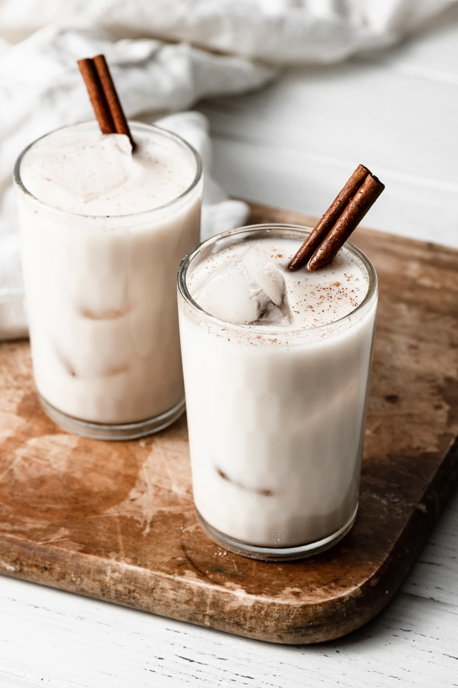

Horchata

Description
Horchata is a creamy and refreshing drink that originates from Latin America and Spain. It is made by blending or soaking rice, almonds, or other nuts and seeds with water, sweetening it with sugar or condensed milk, and adding aromatic flavors such as cinnamon and vanilla. The result is a delightful beverage with a unique nutty and spiced taste that is often served over ice for a cool and satisfying experience.
Ingredients
- 1 1/4 cups (244g) long grain white rice (dry uncooked)
- 1/2 cup (50g) sliced almonds
- 2 cinnamon sticks (appox 2 1/2-inches each)
- 4 cups (945ml) cold water
Steps
- Add rice, almonds and cinnamon sticks to a high speed blender. Blend about 30 - 60 seconds on high speed or until finely pulverized, stopping occasionally and shaking blender if mixture sticks to the bottom.
- Pour in 2 cups water, sugar and vanilla. Blend an additional 30 seconds. If your blender can fit the additional liquid pour in remaining 2 cups water, and milk, otherwise pour into a large enough container to fit along with water and milk.
- Cover and chill 8 - 12 hours.
- Strain mixture through a fine mesh sieve into a pitcher. Serve with ice if desired, garnishing each serving with ground cinnamon or cinnamon sticks.
uce, using ½ of the ricotta. Sprinkle ⅓ of the mozzarella and ⅓ of the Parmesan over the top.